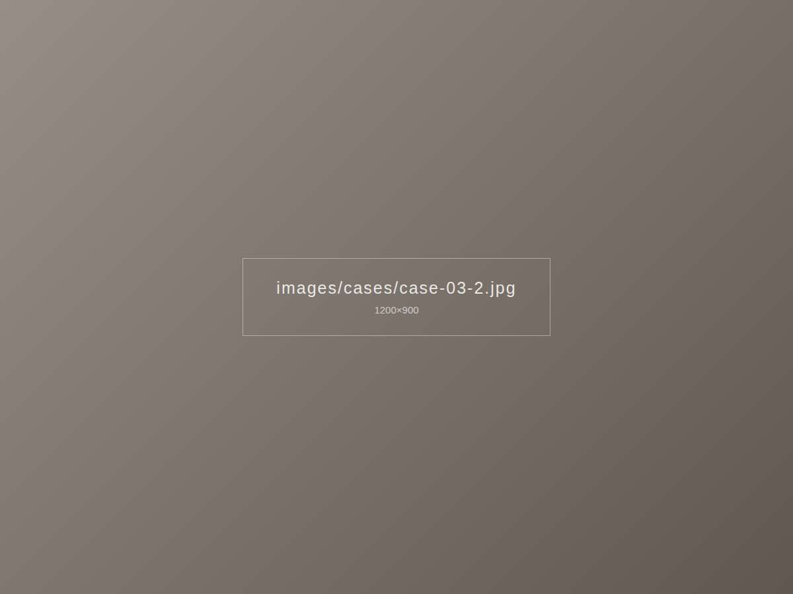
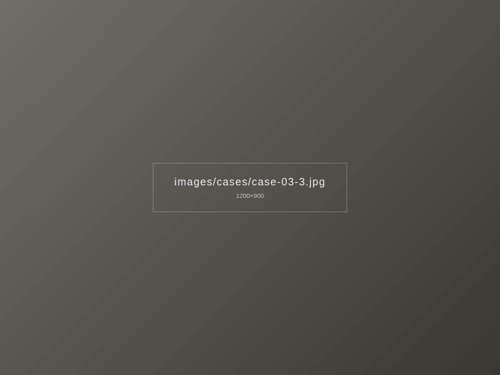

이런 고민이 있었어요
재택근무를 하는 서재라 오전 햇빛이 모니터에 반사되는 것이 가장 큰 불편이었습니다. 완전히 막으면 방이 답답해지는 것도 원하지 않으셨어요.



이렇게 해결했어요
슬랫 각도로 빛의 방향을 바꿀 수 있는 50mm 우드 블라인드를 선택했습니다. 빛을 천장 쪽으로 튕겨 올리도록 각도를 조절하면 방은 밝게, 모니터는 눈부심 없이 쓸 수 있습니다.
시공 포인트
- 책상 위치를 고려해 조작 줄을 반대쪽에 배치
- 원목 책상과 맞춘 내추럴 컬러
- 창틀 안쪽에 넣어 깔끔한 마감
비슷한 집이라면
서울 마포구 지역, 비슷한 구조의 집이라면 이 사례 사진을 보여주시며 상담받으셔도 좋아요.
우드 블라인드 자세히 보기 · 마포 시공 안내